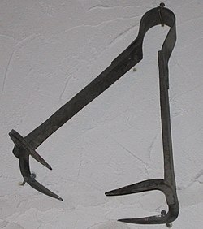

The breast ripper, was a torture instrument used on women were accused of a variety of negative crimes
the device was made out of iron and had four claws, It was designed to shred/tear the breasts off the victim. It was often heated during the torture.
Similar Instrument: Iron Spider
Note: There is little evidence this device was actually used
